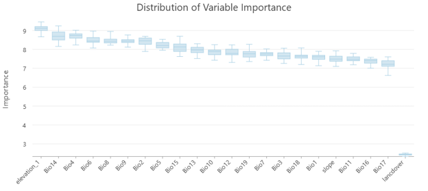
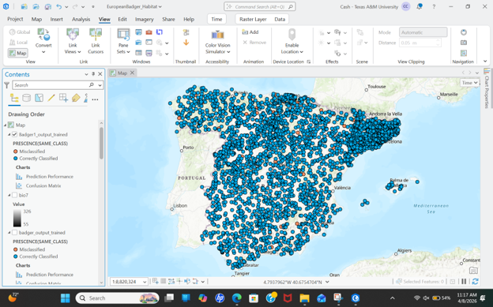
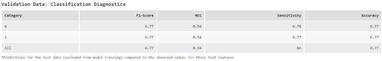

This project developed a species distribution model for the European Badger across the Iberian Peninsula using environmental and climatic variables within ArcGIS Pro.
The goal was to identify environmental characteristics associated with suitable habitat and generate a map predicting the probability of species occurrence.
Conservation planning and wildlife management require understanding where species are most likely to occur.
The challenge was to combine multiple environmental datasets with species observations to create a reliable habitat suitability model.
The final Random Forest model achieved a validation accuracy of 77 percent.
Temperature- and precipitation-related variables, elevation, and land cover emerged as some of the most important predictors of habitat suitability.
The resulting habitat suitability map identified regions across Spain and Portugal that were most likely to support European Badger populations.
Future iterations could incorporate higher resolution environmental datasets, additional species observations, and temporal climate data.
I would also explore alternative machine learning algorithms and comparative model evaluation techniques to determine whether prediction performance could be improved further.
Habitat suitability maps and model outputs from this project.


